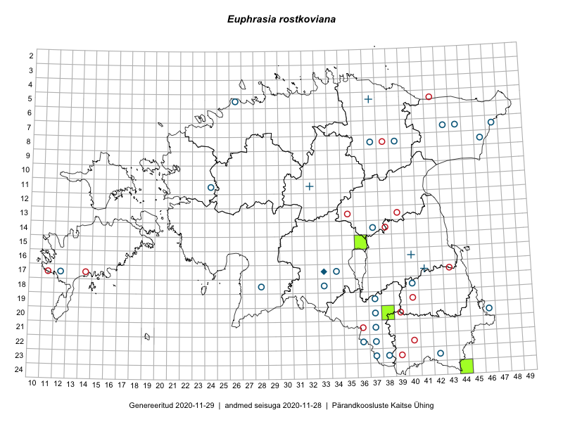

Euphrasia rostkoviana — aas-silmarohi
Orobanchaceae :: Euphrasia rostkoviana Hayne (42); Euphrasia pratensis Fr. (2); Euphrasia montana Jord. (1); Euphrasia rostkoviana subsp. montana (Jord.) Wettst. (1)

Kaart põhineb 46 kirjel:
herbaareksemplare 46
Taime kaasaegsed ja ajaloolised leiukohad asuvad 31 ruudus.
Tingmärgid ja ruutude arvud periooditi (U1 / V2 )
█ 2006–2020 (3/–)
◆/◇ 1971–2005 (0/0)
○ 1921–1970 (24/29)
+ kuni 1920 (4/0)
× hävinud (–/0)
? kaheldav (–/0)
| Ruut | Leidja(d) | Leiuaeg | Kirje |
|---|---|---|---|
| 20-46 | T. Lippmaa | 1922-07-24 | TU257387: Euphrasia rostkoviana subsp. montana (Jord.) Wettst. |
| 08-46 | M. Kask | 1961-08-15 | TAA0036756: Euphrasia rostkoviana Hayne |
| 17-12 | Liivia Laasimer | 1949 | TAA0036811: Euphrasia rostkoviana Hayne |
| 11-24 | H. Karu | 1954-08-24 | TAA0037209: Euphrasia rostkoviana Hayne |
| 08-46 | M. Kask | 1961-08-15 | TAA0037210: Euphrasia rostkoviana Hayne |
| 05-26 | M. Lätt, Visolde Puusepp | 1960-08-13 | TAA0037211: Euphrasia rostkoviana Hayne |
| 19-37 | M. Kask, Aino Sooman | 1957-08-25 | TAA0037212: Euphrasia rostkoviana Hayne |
| 23-42 | Visolde Puusepp, Helga Tamm | 1957-08-03 | TAA0037213: Euphrasia rostkoviana Hayne |
| 23-38 | Linda Viljasoo | 1957-08-15 | TAA0037214: Euphrasia rostkoviana Hayne |
| 22-36 | Vilma Kuusk, H. Rebassoo | 1957-08-17 | TAA0037215: Euphrasia rostkoviana Hayne |
| 20-37 | Visolde Puusepp, Aino Sooman | 1957-08-22 | TAA0037216: Euphrasia rostkoviana Hayne |
| 21-37 | Viive Kõvask, Helga Tamm | 1957-08-21 | TAA0037217: Euphrasia rostkoviana Hayne |
| 22-37 | Salme Kask | 1957-08-20 | TAA0037218: Euphrasia rostkoviana Hayne |
| 22-37 | Salme Kask | 1957-08-20 | TAA0037219: Euphrasia rostkoviana Hayne |
| 19-37 | M. Kask, Aino Sooman | 1957-08-25 | TAA0037220: Euphrasia rostkoviana Hayne |
| 21-37 | M. Kask | 1957-08-23 | TAA0037221: Euphrasia rostkoviana Hayne |
| 18-33 | Linda Viljasoo | 1959-08-10 | TAA0037222: Euphrasia rostkoviana Hayne |
| 18-33 | Vilma Kuusk, Agnes Ojaveer | 1959-08-10 | TAA0037223: Euphrasia rostkoviana Hayne |
| 07-43 | M. Kask, Helga Tamm | 1961-08-11 | TAA0037224: Euphrasia rostkoviana Hayne |
| 07-47 | M. Kask | 1961-08-10 | TAA0037225: Euphrasia rostkoviana Hayne |
| 08-39 | Henni Kallak, Helga Tamm | 1956-08-05 | TAA0037226: Euphrasia rostkoviana Hayne |
| 18-40 | Salme Kask | 1956-08-31 | TAA0037227: Euphrasia rostkoviana Hayne |
| 18-28 | Silvia Talts | 1934-08-22 | TAA0037228: Euphrasia rostkoviana Hayne |
| 14-37 | Silvia Talts | 1948-08-26 | TAA0037229: Euphrasia rostkoviana Hayne |
| 23-37 | L. Tehver | 1949-08-04 | TAA0037230: Euphrasia rostkoviana Hayne |
| 23-37 | L. Tehver | 1949-08-04 | TAA0037231: Euphrasia rostkoviana Hayne |
| 22-37 | Salme Kask, Aino Sooman | 1957-08-17 | TAA0037232: Euphrasia rostkoviana Hayne |
| 17-34 | Linda Viljasoo | 1959-08-07 | TAA0037233: Euphrasia rostkoviana Hayne |
| 07-47 | Agnes Ojaveer | 1961-08-10 | TAA0037234: Euphrasia rostkoviana Hayne |
| 07-47 | Agnes Ojaveer | 1961-08-10 | TAA0037235: Euphrasia rostkoviana Hayne |
| 07-47 | Agnes Ojaveer | 1961-08-10 | TAA0037236: Euphrasia rostkoviana Hayne |
| 21-37 | Viive Kõvask, Ella Tammemägi | 1957-08-22 | TAA0037237: Euphrasia rostkoviana Hayne |
| 21-37 | Salme Kask, Aino Sooman | 1957-08-17 | TAA0037238: Euphrasia rostkoviana Hayne |
| 07-44 | Visolde Puusepp | 1961-08-07 | TAA0037239: Euphrasia rostkoviana Hayne |
| 22-37 | M. Kask, Salme Kask | 1957-08-20 | TAA0037240: Euphrasia rostkoviana Hayne |
| 22-37 | M. Kask, Salme Kask | 1957-08-20 | TAA0037241: Euphrasia rostkoviana Hayne |
| 16-40 | H. Kapp | 1856–1889 | TAA0037609: Euphrasia rostkoviana Hayne |
| 06-27 | A. Saaristu | 1942-07-17 | TAM0029778: Euphrasia pratensis Fr. |
| 06-27 | A. Saaristu | 1942-07-17 | TAM0029936: Euphrasia pratensis Fr. |
| 08-37 | Vally Vehik ( Kruhberg) | 1930-08-01 | TAA0115516: Euphrasia rostkoviana Hayne |
| 11-32 | G. Pahnsch | 1877-08-11 | TAM0124881: Euphrasia rostkoviana Hayne |
| 17-41 | P. Glehn | TAM0124882: Euphrasia rostkoviana Hayne | |
| 05-37 | G. Pahnsch | 1879-07-26 | TAM0124901: Euphrasia montana Jord. |
| 20-38 | Eeva-Maria Jeletsky, Tarmo Niitla | 2015-08-11 | TAA0119422: Euphrasia rostkoviana Hayne |
| 24-44 | Ott Luuk | 2015-08-13 | TAA0142458: Euphrasia rostkoviana Hayne |
| 15-36 | Karin Kaljund, Kaire Lanno | 2016-07-29 | TAA0144350: Euphrasia rostkoviana Hayne |
Ruutude arv uue atlase andmekogu järgi. Muuhulgas arvestab vanemat herbaariumi, 2005. aasta atlase välitöölehtedelt uuesti digitaliseeritud andmeid jne. Uue atlase andmekogust pärinevad andmed on kaardile kantud siniste sümbolitega.↩︎
Ruutude arv 2005. aasta atlase (Kukk, T., Kull, T., Eesti taimede levikuatlas. Eesti Maaülikool, Põllumajandus- ja Keskkonnainstituut, Tartu, 2005) järgi. Andmeallikana on kasutatud levik.exe programmi, kus igas ruudus on registreeritud vaid uusim leid. Seetõttu on vanemate perioodide kohta andmed puudulikud. Kasutatud levik.exe andmestikus leidub mõningaid kõrvalekaldeid atlase trükis ilmunud versioonist, sagedamini tarnade ja käpaliste seas. Lisaks leidub selles andmestikus valik liike (peamiselt väheste leidudega tulnuktaimed), mille kaarte trükis ei avaldatud. Vana atlase andmed ruutudest, milles ei ole uue atlase andmekogus leide enne 2006. aastat, on kaardil esitatud punaste sümbolitega. Vana atlase andmetel hävinud ja kaheldavaid leiukohti pole hilisemate (taas)leidude põhjal korrigeeritud.↩︎